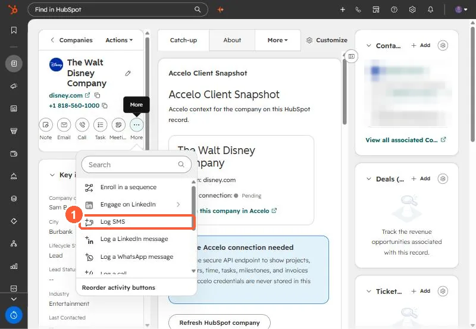

Short answer
An SMS on a HubSpot timeline is a communication record. Create it with POST /crm/v3/objects/communications, set hs_communication_channel_type to SMS, give it hs_timestamp, and associate it to the contact in the same request with associationTypeId 81. Without the association block the call still returns 201, and the record sits attached to nothing.
1. The request
POST /crm/v3/objects/communications
{
"properties": {
"hs_communication_channel_type": "SMS",
"hs_communication_logged_from": "CRM",
"hs_communication_body": "Running 10 minutes late",
"hs_timestamp": "2026-09-21T23:58:00Z"
},
"associations": [{
"to": { "id": "CONTACT_ID" },
"types": [{ "associationCategory": "HUBSPOT_DEFINED", "associationTypeId": 81 }]
}]
}I confirmed 81 as communication to contact by reading the association labels endpoint for communications and contacts rather than guessing. The same channel property also takes WHATS_APP and LINKEDIN_MESSAGE.


2. The failure that looks like success
Leave out associations and HubSpot still creates the record and returns 201. It just is not on any timeline. If your integration "works" and nobody can find the messages, check this first.
3. Matching the contact by phone
We run this from an automation tool: a webhook receives the SMS, a search finds the contact by phone, then an API call creates the communication. Two limits we hit:
- Exact match. The search uses an exact equals filter, so
4695551234does not find+14695551234or(469) 555-1234. Normalize both sides. See phone formats hiding duplicates. - No contact, no log. When the search finds nobody, the scenario stops and nothing is logged. Add a branch that records unmatched messages somewhere you will see them.